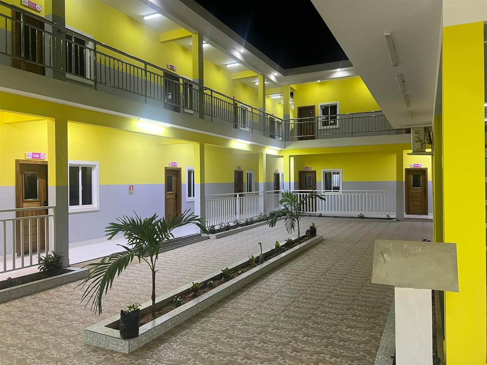

Secretaria · linha 1
+244 921 296 545

Contactos
Entre em contacto connosco para obter informações sobre cursos, admissões, matrículas e propinas.
Telefones e WhatsApp
Os dois números atendem chamadas e mensagens de WhatsApp.
Secretaria · linha 1
+244 921 296 545
Secretaria · linha 2
+244 957 919 179
Formulário
Deixe a sua mensagem e o contacto. Indique o assunto para encaminharmos mais depressa.
Localizações
Os mapas mostram a zona de referência. Na dúvida, ligue antes e indicamos o caminho.
Localização 1 · Talatona, Luanda
Localização 2 · Talatona, Luanda